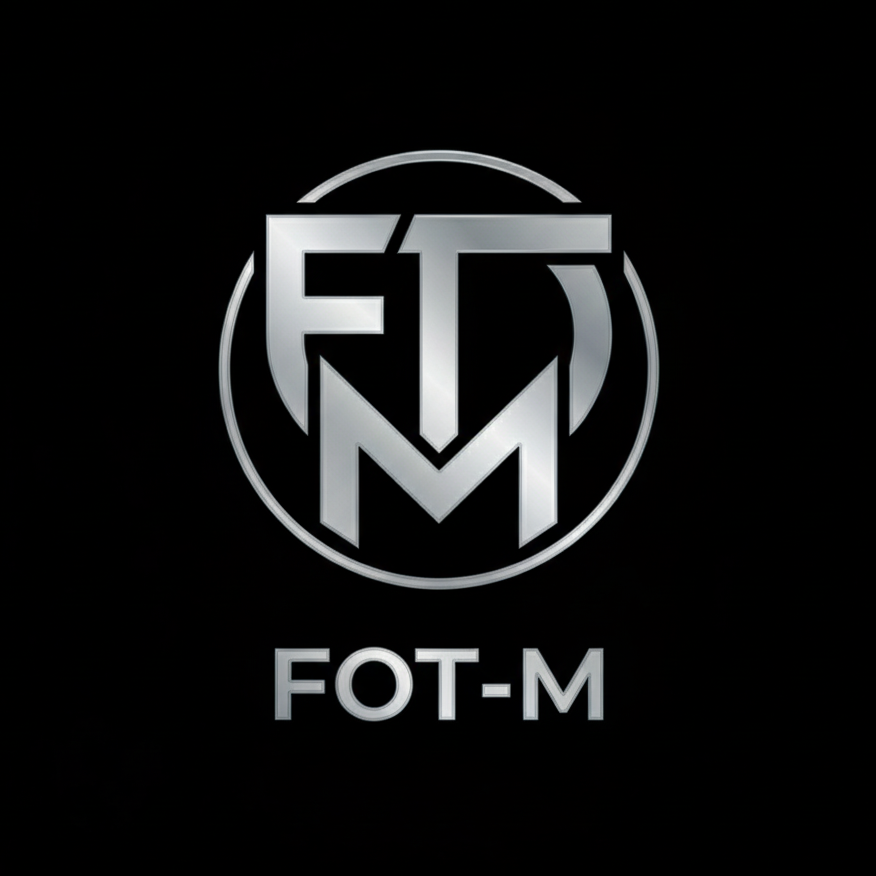

Üretimin Geleceği Bizim Elimizde
Sakarya Uygulamalı Bilimler Üniversitesi bünyesinde teorik bilgiyi pratiğe dönüştüren; Endüstri 4.0 ve otomasyon sistemleri odaklı projeler geliştiren öğrenci topluluğuyuz.
Üretimin Geleceği Öğrenci Topluluğu, akademik teoriyi endüstriyel gerçeklikle buluşturan bir teknoloji ve gelişim platformudur. Kurumsal kimliğimiz; disiplin, sistemli çalışma ve sahada üretkenlik üzerine inşa edilmiştir.
Klasik kalıpların ötesinde, sanayinin tam içinden gelen dinamiklerle hareket ediyoruz. Otomasyon ve akıllı üretim odağında, teorik altyapıyı sahanın ihtiyaç duyduğu somut endüstriyel çözümlere dönüştürüyoruz.
Öğrencilerimizin üretim teknolojileri, Endüstri 4.0 ve otomasyon sistemleri konularında akademik ve sosyal gelişimlerini sağlamak.
TEKNOFEST ve TÜBİTAK gibi mühendislik yarışmalarında üniversitemizi proje takımlarıyla temsil etmek.
Sektör temsilcileri ile öğrencileri bir araya getirerek üniversitemizde üretim kültürünü yaygınlaştırmak.
FOT-M (Future of the Manufacturing), Üretimin Geleceği Öğrenci Topluluğu'nun TEKNOFEST ve TÜBİTAK gibi platformlarda üniversitemizi temsil eden Endüstri 4.0 odaklı proje takımıdır. Vizyonumuz; akıllı imalat teknolojileri ve otomasyon sistemleri üzerine sahada birebir uygulanabilir, yenilikçi projeler geliştirmektir.
Teoriyi sanayi pratiğiyle birleştiren ekibimiz; sahadan veri toplayan, dijital ikiz senaryoları kurgulayan ve üretim sistemlerini optimize eden projelerle ülkemizin milli teknoloji hamlesine doğrudan katkı sağlamayı hedefler. Sadece tasarlayan değil, bizzat sahada kuran ve işleten bir kültürle hareket ediyoruz.

İmalat süreçlerinin optimizasyonu için IIoT mimarileri, dijital ikiz senaryoları ve yapay zeka destekli otonom sistem prototiplerinin tasarımı.
Eklemeli imalat, hassas CNC işleme ve robotik entegrasyon yöntemlerini kullanarak karmaşık mühendislik tasarımlarının fizikselleştirilmesi.
Endüstriyel kontrol sistemleri mimarisi, PLC programlama ve üretim sahasından toplanan verilerin analitiği üzerinden süreç optimizasyonu.